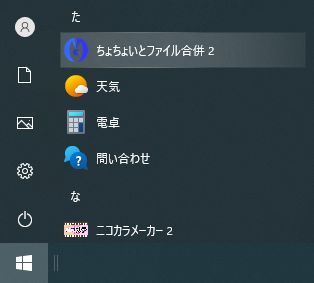
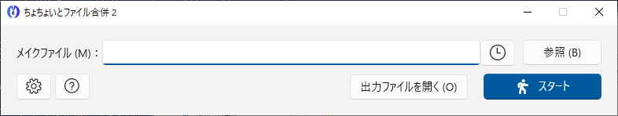
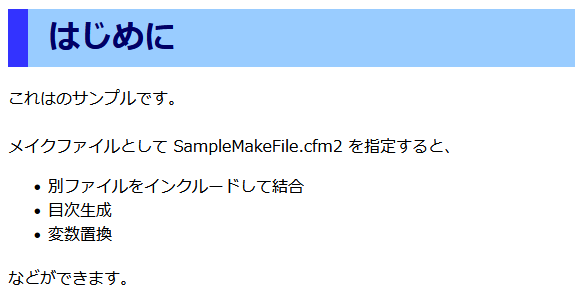
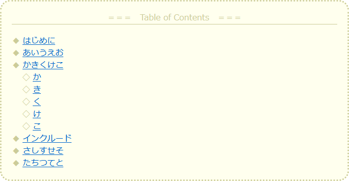

はじめに
概要
 ちょちょいとファイル合併 2 は、静的 HTML によるヘルプの作成をアシストする、開発者向けのツールです。
ちょちょいとファイル合併 2 は、静的 HTML によるヘルプの作成をアシストする、開発者向けのツールです。
メイクファイルを作成しておくことにより、
- 別ファイルをインクルードして結合
- 目次生成
- 変数置換
などができます。
ちなみに、本ヘルプもちょちょいとファイル合併 2 で作成されており、左側の目次も自動生成されたものです。
（補足）
本ヘルプで縮小表示されている画像は、クリックすると原寸大で表示されます。
動作環境
ちょちょいとファイル合併 2 公式ページのサポート情報をご覧ください。
インストール
ちょちょいとファイル合併 2 を Microsoft Store から入手することでインストールが完了します。
更新（バージョンアップ）は自動的に行われます。更新版が公開された場合、何度かちょちょいとファイル合併 2 を使用しているうちに自動的に更新されますので、通常は何ら更新作業は必要ありません。自動更新を待つのではなくすぐに更新したい場合は、Microsoft Store で更新してください。
チュートリアル
ちょちょいとファイル合併 2 で HTML ヘルプを作成する一連の流れを説明します。
起動

スタートメニューの「た」行の位置にちょちょいとファイル合併 2 が登録されているので、クリックして起動します。

メインウィンドウが表示されます。
メイクファイル指定
HTML ヘルプを作成するために、メイクファイルを指定します。
本チュートリアルでは、サンプルとして用意されているメイクファイルを指定します。
（ヘルプボタン）をクリックし、［サンプルフォルダー］メニューをクリックすると、サンプルが用意されているフォルダーが開きます。
（補足）
ヘルプボタン初回クリック時はメニューが狭く表示されますが、2 度目以降は普通に表示されます。
「メイクファイル」欄に、サンプルフォルダー内にある「SampleMakeFile.cfm2」のフルパスを入力します。
もしくは、相対パスで「Documents\Samples\SampleMakeFile.cfm2」と入力します。
（注意）
サンプルフォルダーにはもう 1 つのファイル「SampleIncludeFile.cfm2include」もありますが、こちらはインクルードされるサンプルです。メイクファイル欄には「SampleMakeFile.cfm2」を指定してください。

メイクファイルの中身は HTML ファイルです。従って、サンプルのメイクファイルを Web ブラウザで開くと内容を見ることができます。
メイクファイルが通常の HTML ファイルと異なるのは、HTML コメントの形式をした「Cfm タグ」が埋め込まれていることです。
例えば、「<!-- Cfm/Toc: -->」という Cfm タグを埋め込まれていると、その場所に目次が生成されることになります。
サンプルのメイクファイルをテキストエディタで開くと、Cfm タグの様子が分かるかと思います。
HTML ヘルプ作成
メイクファイルを指定したら、「スタート」ボタンをクリックすると HTML ヘルプが作成されます。
サンプルのメイクファイルでは、Cfm タグで HTML ヘルプのパスが指定されており、「C:\Temp\Sample.html」に HTML ヘルプが作成されます。

「出力ファイルを開く」ボタンをクリックすると、作成された HTML ヘルプがブラウザで開かれます。
HTML ヘルプの先頭に目次が生成されています。あくまでも HTML ですので、目次の書式などは CSS で自由に変更することができます。
以上でチュートリアルは終了です。
より詳しい使い方は次章以降をご覧ください。
使い方
チュートリアル章で実践したように、ちょちょいとファイル合併 2 ではメイクファイルを元に HTML ヘルプを作成します。
メイクファイル自体も HTML ファイルで、かつ、Cfm タグを埋め込んだものになりますので、
- HTML ファイル ＋ Cfm タグ ➡ メイクファイル
となります。
Cfm タグは HTML コメントの形式で、例えば「<!-- Cfm/Toc: -->」という Cfm タグではその場所に目次が生成されます。また、「<!-- Cfm/Include: インクルードファイル名 -->」という Cfm タグではその場所に別の HTML ファイルを読み込むことができます。
Cfm タグを活用することで、手作業ですべての HTML ヘルプを作成するよりも効率的になります。
Cfm タグの仕様については次章をご覧ください。
Cfm タグ仕様
共通仕様
本節では、Cfm タグに共通する仕様について説明します。
Cfm タグは HTML コメント形式で、
<!-- Cfm/タグ名: タグ値 -->
のように記載します。
Cfm の後ろにスラッシュ、タグ名の後ろにコロンが必要です。
例）
<!-- Cfm/Include: SampleIncludeFile -->
Cfm タグによってはタグ値がないものもありますが、その場合もコロンは必要です。
例）
<!-- Cfm/Toc: -->
タグ名の大文字小文字は区別されません。タグ値の両側の空白文字は無視されます。
インクルード（Include）
別の HTML ファイルを読み込んで挿入します。
| 書式 | <!-- Cfm/Include: インクルードファイル名 --> |
|---|
インクルードファイル名は絶対パスで記載することもできますし、メイクファイルからの相対パスで記載することもできます。
インクルードファイル名の拡張子は省略することができます。省略した場合は、IncludeDefaultExt タグで指定した拡張子が使われます。
インクルードファイルもメイクファイル同様に Cfm タグを使うことができます。例えば、メイクファイルでファイル A をインクルードし、ファイル A でファイル B をインクルードする、といった使い方ができます。
例）
<!-- Cfm/Include: C:\Include\Hoge1.html --> <!-- Cfm/Include: Hoge2.cfm2 --> <!-- Cfm/Include: Hoge3 -->